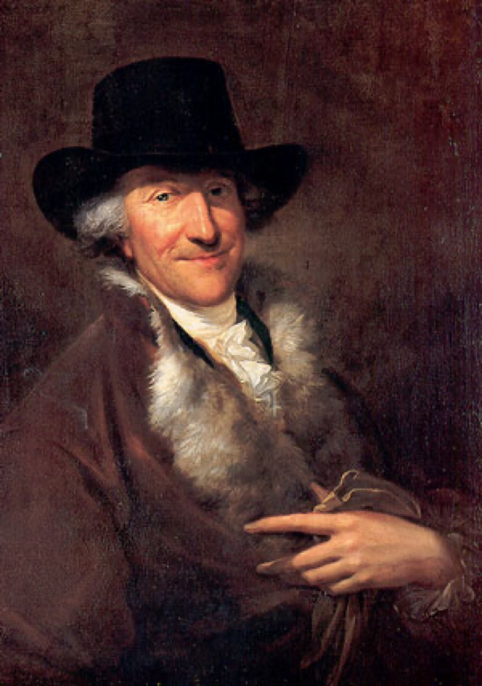

The Weimar nursery: Friedemann, Emanuel — and Telemann at the font

The Weimar parish registers keep a different kind of record of the organ decade — not commissions and salary raises but baptisms, entered in the same steady clerical hand while the famous career unfolded across town. Read in order, they chart a household filling: Catharina Dorothea in December 1708, within months of the move; Wilhelm Friedemann, the adored eldest son, in November 1710; twins in February 1713 who died within days of their birth — the era's grief entered as tersely as its joys; Carl Philipp Emanuel in March 1714; Johann Gottfried Bernhard in May 1715. Six of Maria Barbara's seven children were born here. Four survived. And two of the survivors — Friedemann and Emanuel — were destined to overshadow their father's fame for half a century, a fact so strange to modern ears that Arc II of this timeline exists largely to explain it. The nursery of 1710 and 1714 holds, in two cradles, the future of the family name.
One register entry deserves to be read twice, because it carries the era's best networking detail. At Emanuel's baptism in March 1714, the godfather recorded is Georg Philipp Telemann — then at Frankfurt, already the most famous young composer in Germany, and evidently on warm enough personal terms with Bach to stand at the font for his son. Godparenthood in that world was not a formality; it was a declared bond, chosen and public. The relationship it declares is worth holding in view across the whole timeline, because it keeps reappearing with the roles rearranged: Telemann the friend at the font in 1714; Telemann the first choice for the Leipzig job that Bach eventually got, in 1722; Telemann the celebrity whose fashionable, agreeable style the age preferred to Bach's learned density — the ranking that frames Arc II. Posterity has reversed the verdict so completely that we instinctively read their story as rivalry, but no rivalry documents survive; by every indication the two men simply liked each other while the market ranked them. That is precisely what makes the pairing instructive rather than merely ironic. The baptismal register catches the eighteenth century's honest opinion at the moment of its recording: the most famous composer in Germany, graciously lending his prestige to the family of a well-regarded provincial colleague.
But the deeper claim of this card is that the family track here is also a craft track, because this particular nursery was becoming something no other composer's household quite became: a workshop. The children born in these entries are the children for whom the pedagogy will be written — Friedemann the future recipient of the Clavierbüchlein, the little keyboard book his father would begin for him at Cöthen; the sons for whose training the Inventions and the notebooks took shape. Bach's teaching method survives to us chiefly because he applied it, systematically and lovingly, to his own children, and the documents of that teaching — graded, sequenced, handwritten — are our best record of how the most complete musician of the age thought instruction should proceed. The births in the Weimar register are, seen from the works' side, the future curriculum acquiring its students.
And one of those students would acquire a further role that no one at the font in 1714 could have foreseen. Emanuel — godson of Germany's most famous composer, second surviving son of its most learned one — grew up to become his father's chief rememberer: co-author of the Obituary, keeper of manuscripts, answerer of biographers' letters, curator of the legend through the decades when the world had largely stopped performing the music. The family's memory machine, on which so much of Arc II and Arc III depends, was being born here alongside the children themselves. It is the kind of long arc this timeline exists to draw: a baptismal entry in a Weimar register, a famous godfather's signature, and at the end of the thread, the survival of Bach's reputation itself. The household filling in these years was not incidental to the life's work. It was infrastructure — the first audience, the permanent classroom, and eventually the archive.
Continue with the era essay: Weimar: the organ decade and the Italian conversion, or follow the eldest son's curriculum: the Clavierbüchlein for Wilhelm Friedemann.
Weimar parish registers, 1708–1715
Wolff, The Learned Musician, ch. 6
→ full bibliography & links